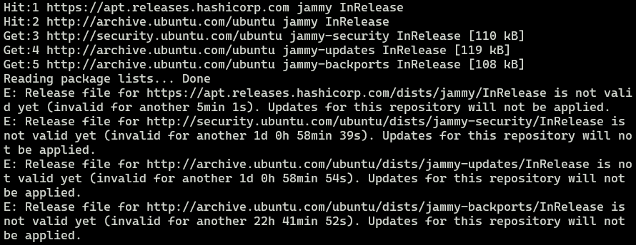
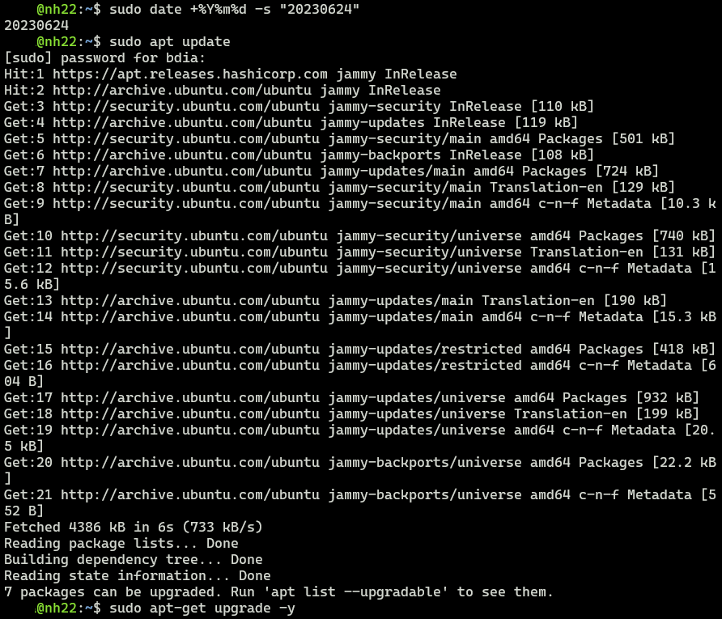

최근 WSL를 쓰게 되면서, 한 가지 이슈가 생겼다.
APT repo를 업데이트 하면 아래와 같은 에러가 발생한다.
이것저것 손대보고 해결법을 적어보고자 한다.

오류 증상은 릴리스 파일이 존재하지 않는데, 5분 1초동안 유효하지 않는다고 한다.
무슨 말인가 싶은데, 5분 있다가 업데이트 해보라는 것이다.
원인
오랫동안 절전모드로 두어서 시간 동기화가 안된 것으로 보인다.
재부팅하지 않으려고 했기에, 해결을 위해 더 많은 시간을 보냈다.
해결 방법 1. 시간 동기화
- 검색엔진에 널려있는 해결법은 시간 동기화이다. 당연하게도 Ubuntu의 시각이 과거에 있기 때문에, 하드웨어 시각을 실제 시간에 맞추면 된다.
- 물론 시간동기화는 자동으로 이루어지기 때문에 웬만한 경우에는 해결되나,
사용하고 있던 WSL환경에서는 한 시간이 되어도 해결되지 않았다. - 아래의 커맨드를 통해서 강제 동기화를 하였으나 효과가 없었다.
하지만, 많은 경우 해결이 된다.
# 강제로 시간 동기화
# Force system to use local time
sudo timedatectl set-local-rtc 1
# APT repo 정상 업데이트 확인
sudo apt-get update -y && sudo apt-get upgrade -y
# 시간 동기화 설정 원복
sudo timedatectl set-local-rtc 0
해결방법 2. 시간 지정
- 우연히, Youtube 영상(References 추가)을 참고하여 문제를 해결 하였다.
- 시간을 문자열로 지정하면 된다.
- 영상에서는 시간을 특정하여 지정하였지만,
나의 경우에는 일 단위로 차이가 나서 효과가 없었다. 아예 날짜를 특정하여 지정하였다.
# 시간 지정 방법(1)
sudo date -s "23:59:59"
# 시간 지정 방법(2)
sudo date +%T -s "20:31:31"
# 날짜 지정 방법
sudo date %Y%m%d -s "20230624"
# 시간 및 날짜 지정 방법
sudo date -s "2023-06-24 23:59:59"
- 정상적으로 업데이트 됨을 확인
- 이후에 장기간 사용하다 보면, 시간동기화를 할 것이기 때문에 큰 상관이 없다.

References

kkumtree
Source code on GitHub
© 2025 kkumtree and contributors All rights reserved.
Licensed under
CC BY-NC-ND 4.0